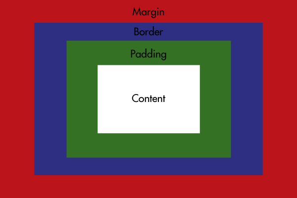

Structure, Phrasing and Display
Structural (block) elements start on a new line and takes up the full width as possible. This takes up most of the page and allows for unity of the webpage. Phrasing (in-line) elements
does the opposite of block elements; it takes up less space on the page. This element is only used for smaller portions of the page and does not affect the unity of the page entirely.
There are different display settings like grid, flex, and tables, along with block and in-line. These affect how the content appears on the webpage.
Box Model
The box model refers to how content is organized in CSS. Starting from the inside out, it goes: content, padding, border, and margin. The content is what is deep in the box. The padding
makes space for between the content and the border. The border separates the padding and the margin. The margin separates the border (including the content with padding) from the other
content of the webpage. The width of the box refers to how large the content is on the webpage. The box-sizing property determines how the content looks in its own space. It may appear
bigger if you consider the padding, border, and margins.

Background Images
Background images are generated in CSS and appear behind elements. Images loaded through the image tag in HTML do not need to be generated in CSS.
Both kinds of images need to be loaded by URL. As you see here, the image is behind the text. The background color and the actual color of the heading and the
paragraph accomodates the image for legibility. This image is originally 600 pixels wide and 343 pixels tall and takes 83KB space on disk.